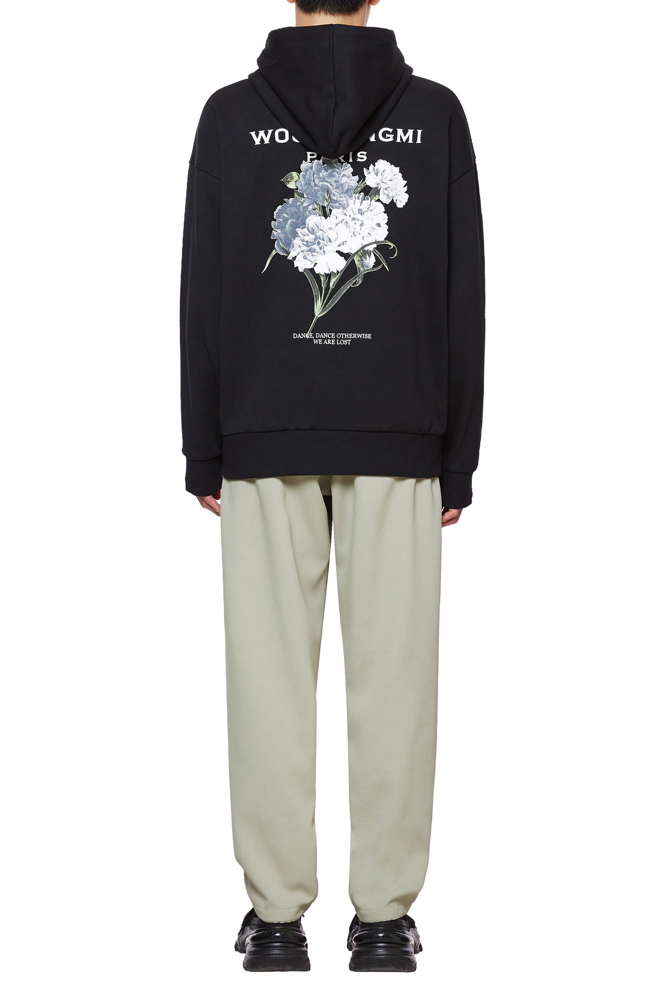

WOOYOUNGMI

Dance Dance Otherwise We are lost
WOOYOUNGMI (also known as Wooyoungmi) is a South Korean menswear clothing brand launched in Paris by the designer Youngmi Woo in 2002. It is sold through own-brand stores and global retailers. Art and architecture are sources of inspiration for the brand. The brand has become known for tailoring. In 2014, The Korea Herald wrote that “Wooyoungmi has become the most successful Korean independent menswear designer brand.”